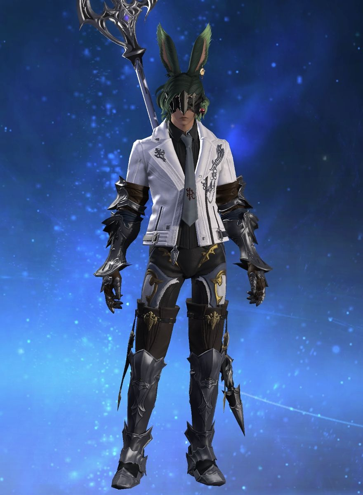

Name Day
24th sun of the 6th Astral Moon
Name
Adol Ramos
City State
Gridania
Grand Company
Order of the Twin Adder / Serpent Private 3rd Class

Major Equipment
- Augmented Shire Halberd
- Augmented Shire Pathfinder's Circlet
- Augmented Shire Pathfinder's Armor
- Doman Iron Gauntlets of Maiming
- Kudzu Longkilt of Maiming
- Augmented Shire Pathfinder's Sollerets
Total Item Level
268
Total Minions
20
Job Level
Level 70 Dragoon
Recent Minions
- Wind-up Moenbryda / 8-29-2023
- Wind-up Aymeric / 8-28-2023
- Poro Roggo / 7-31-2023
- Wind-up Haurchefant / 7-28-2023
- Wayward Hatchling / 7-04-2023
- Cherry Bomb / 7-04-2023
- Mammet #001 / 7-04-2023
- Gigi / 7-03-2023
- Wind-up Odin / 6-27-2022
- Wind-up Cid / 62-27-2022
Total Achievements
148
Recent Achievements
- Strong Lance Arm / 5-16-2026
- Put your Wings Up / 5-16-2026
- Freebird: The Ruby Sea / 5-16-2026
- Unexplained / 5-16-2026
- Mapping The Realm: Shisui of The Violet Tides
Total Mounts
7
Favorite Mount
Midgardsormr
Recent Mounts
- Midgardsormr / 6-28-2022
- Magitek Death Claw / 6-27-2022
- Manacutter / 6-26-2022
- Black Chocobo / 6-23-2022
- Ahriman / 6-19-2022
- Magitek Armor / 3-05-2022
- Company Chocobo / 2-21-2022
The Ashes of Valor: A Legacy Bound by Blood and Sacrifice
Adol Ramos, a youth of the elusive lapine folk, was born within the towering walls of the ancient fortress, his family’s name etched deep in its history. His father, a celebrated war hero whose valor was sung across the realms, stood as a living legend. His mother, a gentle soul, had loved the veteran deeply, gifting him two sons: firstborn Albrecht, then Adol, the youngest of their brood.
Albrecht, tall and broad of shoulder, seemed a living reflection of their father’s greatness. In every aspect, he outshone Adol. His compassion boundless, his charisma captivating, and his prowess in battle was said to rival even their father's own legendary feats. Adol, however, found his heart not in steel and war, but in the pages of ancient tomes, where the sagas of their draconic forebears slumbered. Among the rabbits of the land, none knew the lore of their ancestors as intimately as Adol, save perhaps Father Emmett, the venerable Rabbi of the realm.
Father Emmett, a wise and ancient scholar, had taken a special interest in young Adol. For years, he shared with him tales of forgotten epochs and whispered truths that spanned far beyond the reach of time. The bond between the two grew deep until one day, without warning, the Rabbi vanished, likely in pursuit of arcane wisdom far beyond the horizon.
Now, an unsettling tension hangs heavy over the fortress. The once-brimming river of Beodrianade, known for its deep amethyst hue, runs clear, a grim omen to the people. For in these lands, such a change heralds an undeniable truth: a sacrifice must be made to sate the ancient dragon Beodrianade, whose will governs their fate.
In this era of peace, there is a scarcity of warriors whose deeds could stir the dragon's favor. The whispers of the realm have turned, with inevitable certainty, to the Ramos family; whose courage, loyalty, and profound love have no equal. It is said no house in the land bears the strength to rival them.
Though sacrifice is not meant to be a mournful rite, on the eve of this great offering, even the mighty peaks that cradle the fortress seemed to weep. A sacrifice of such magnitude is sure to appease Beodrianade, and may the ashes of the brave sow the seeds of prosperity for the generations yet to come.